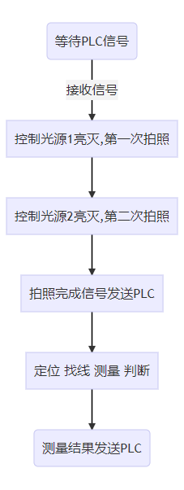

Dự án này chủ yếu đo khoảng cách từ khung phôi tới cạnh chuẩn và độ song song của khung.
Dự án được thực hiện tại hai trạm đo, lần lượt đo kích thước mặt trước và mặt sau của đế mẹ; nội dung kiểm tra từng trạm như sau:
Trạm 1 đo tổng cộng 4 khoảng cách, trong đó khoảng cách 2 chia thành khoảng cách 2_1, 2_2 và 2_3; khoảng cách 4 là độ song song giữa hai cạnh. Cụ thể như sau:
(1) Hình dưới, đường thẳng màu tím là khoảng cách 1.
(2) Hình dưới, đường thẳng màu tím là khoảng cách 2, chia thành ba đoạn; lấy khoảng cách từ hai đầu mút và điểm giữa của đoạn tới cạnh còn lại, từ trên xuống là khoảng cách 2_1, 2_2 và 2_3.

(3) Hình dưới, đường thẳng màu tím là khoảng cách 3.

(4) Hình dưới, đường thẳng màu tím là khoảng cách 4, biểu thị độ song song giữa hai cạnh, đánh giá bằng hiệu khoảng cách từ hai điểm trên một cạnh tới cạnh kia.

Trạm 2 đo tổng cộng 3 khoảng cách, trong đó khoảng cách 2 là độ song song giữa hai cạnh, cụ thể:
(1) Hình dưới, đường thẳng màu tím là khoảng cách 1.

(2) Hình dưới, đường thẳng màu tím là khoảng cách 2, đánh giá độ song song bằng hiệu khoảng cách từ hai điểm trên một cạnh tới cạnh kia.

(3) Hình dưới, đường thẳng màu tím là khoảng cách 3.

Quy trình đo tại hai trạm tương tự nhau: Trạm 1 chụp lần đầu hình nền, lần hai hình tiền cảnh; Trạm 2 chụp lần đầu hình tiền cảnh, lần hai hình nền, như hình dưới:

Như hình dưới, sử dụng hai nhánh song song xử lý đồng thời hình tiền cảnh (hình 2) và hình nền (hình 1); hình nền chủ yếu dùng để tìm đường viền khoảng cách 1, hình tiền cảnh dùng để tìm đường chuẩn và các đường viền khoảng cách 2/3/4.

Việc tính toán 4 khoảng cách liên quan được thực hiện theo hình dưới, sử dụng cách xử lý song song.


Như hình dưới, sử dụng hai nhánh song song xử lý đồng thời hình tiền cảnh (hình 1) và hình nền (hình 2); hình tiền cảnh chủ yếu dùng để tìm các đường viền khoảng cách 1/2/3, hình nền dùng để tìm hai đường chuẩn cho khoảng cách 1/2/3.

Việc tính toán 3 khoảng cách liên quan được thực hiện theo hình dưới, sử dụng cách xử lý song song.


Giao diện sản xuất hiển thị kết quả như hình dưới.